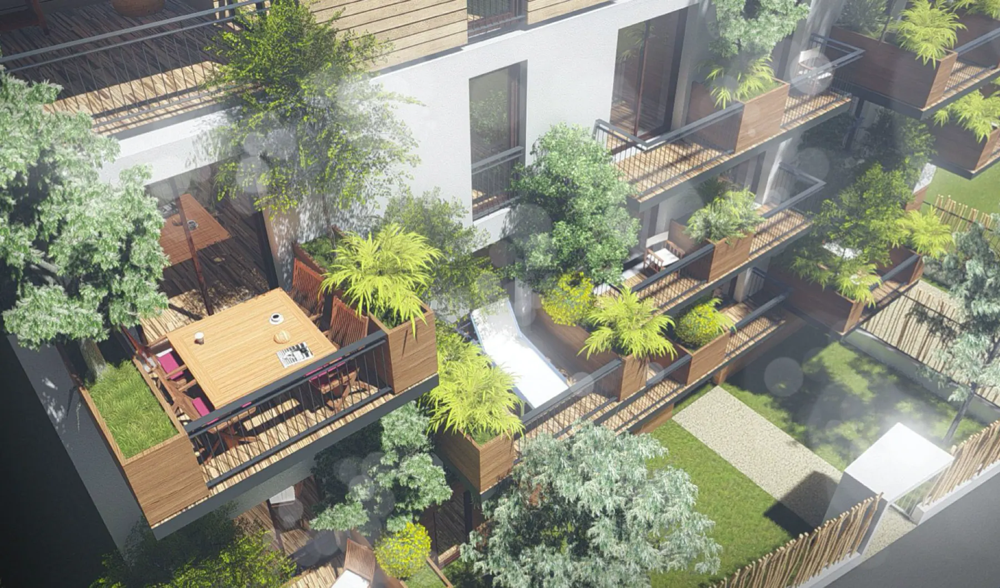
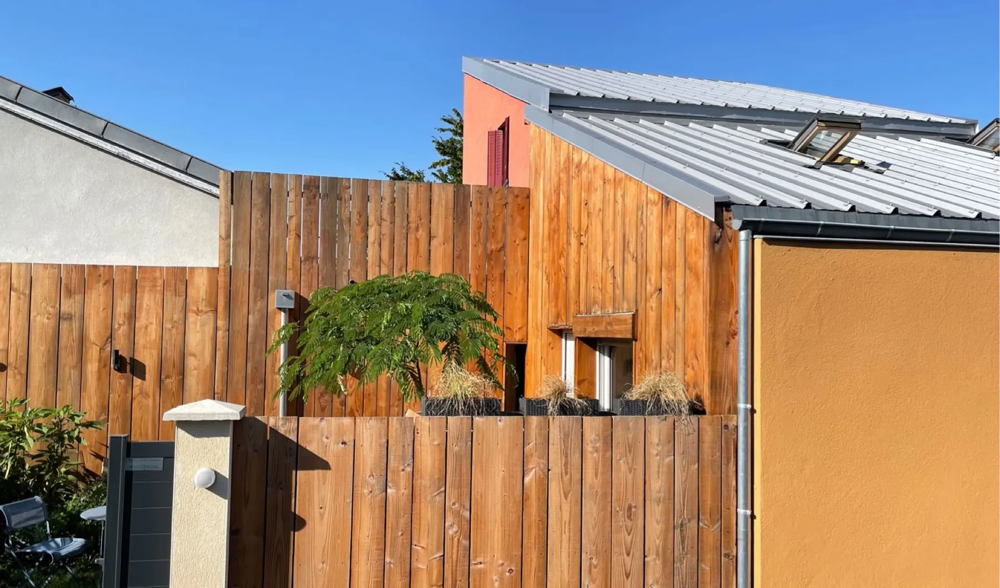

Agile
Des espaces qui évoluent avec leurs habitants : un logement qui devient bureau, un lieu utilisé jour et nuit, avec un minimum de travaux.




Vallée de la Gère — Vienne01 / 04
Architecte-ingénieur et urbaniste à Vienne
architecture4future est une agence d’architecture fondée en 2020 à Vienne par Patrick Stefan Rheinert, architecte-ingénieur formé à la RWTH d’Aix-la-Chapelle, puis à l’urbanisme à l’INSA de Lyon.
Logements, bureaux, écoles, friches industrielles, quartiers entiers : l’agence a mené des projets à Vienne, à Lyon et dans sa métropole, dans le Vercors, en Haute-Savoie et jusque dans l’Indre.
Au centre de nos conceptions se trouve l’humain, mais aussi la végétation déjà présente ou à développer : murs végétalisés, toits verts, jardins suspendus, cours plantées.
Son siège, la grünboX-Vienne, est une ancienne usine textile transformée avec environ 65 % d’empreinte carbone en moins qu’une construction neuve.
Réalisations



Projet phare
−65 %d’empreinte carbone par rapport à du neuf
01 / 05Voir le projet →


Nos principes
Des espaces qui évoluent avec leurs habitants : un logement qui devient bureau, un lieu utilisé jour et nuit, avec un minimum de travaux.
Des lieux de rencontre et d’entraide, intergénérationnels et à échelle humaine, où chacun devient co-créateur de son cadre de vie.
Low-tech, réemploi, économie circulaire, matériaux naturels : une élégance intemporelle plutôt que des gestes à la mode.
Des murs végétalisés aux toits verts, des jardins suspendus aux cours plantées : des bâtiments qui changent au fil des saisons.

Il ne s’agit pas de créer des objets de design achevés, mais de donner naissance à des espaces flexibles et vivants.Patrick Stefan Rheinert

L’architecte
Architecte-ingénieur né en Allemagne, il exerce en France depuis 1989. Il a développé les modèles Récipro-Cité, « cité-jardin du XXIe siècle », et grünboX, bâtiment adaptable, fortement végétalisé, conçu pour l’autoconstruction.